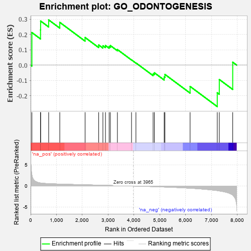
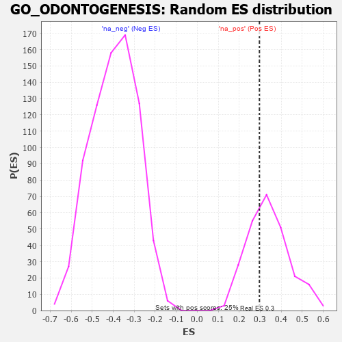

| | | Dataset | 7d |
| Phenotype | NoPhenotypeAvailable |
| Upregulated in class | na_pos |
| GeneSet | GO_ODONTOGENESIS |
| Enrichment Score (ES) | 0.29609194 |
| Normalized Enrichment Score (NES) | 0.8741961 |
| Nominal p-value | 0.6532258 |
| FDR q-value | 0.8642276 |
| FWER p-Value | 1.0 |
Table: GSEA Results Summary

Fig 1: Enrichment plot: GO_ODONTOGENESIS
Profile of the Running ES Score & Positions of GeneSet Members on the Rank Ordered List
| PROBE | GENE SYMBOL | GENE_TITLE | RANK IN GENE LIST | RANK METRIC SCORE | RUNNING ES | CORE ENRICHMENT | | 1 | TGFB3 | | | 49 | 2.654 | 0.2133 | Yes |
| 2 | AXIN2 | | | 383 | 0.713 | 0.2304 | Yes |
| 3 | BAX | | | 387 | 0.711 | 0.2888 | Yes |
| 4 | FST | | | 698 | 0.560 | 0.2961 | Yes |
| 5 | SRC | | | 1128 | 0.459 | 0.2801 | No |
| 6 | BMP7 | | | 2107 | 0.290 | 0.1810 | No |
| 7 | ROGDI | | | 2633 | 0.207 | 0.1321 | No |
| 8 | AQP3 | | | 2796 | 0.184 | 0.1269 | No |
| 9 | FGFR2 | | | 2895 | 0.167 | 0.1284 | No |
| 10 | LEF1 | | | 3037 | 0.144 | 0.1226 | No |
| 11 | HDAC1 | | | 3086 | 0.138 | 0.1280 | No |
| 12 | NFIC | | | 3357 | 0.096 | 0.1020 | No |
| 13 | JAG2 | | | 3903 | 0.010 | 0.0343 | No |
| 14 | CSF1 | | | 4074 | -0.019 | 0.0145 | No |
| 15 | CNNM4 | | | 4738 | -0.147 | -0.0567 | No |
| 16 | MYO5A | | | 4787 | -0.155 | -0.0499 | No |
| 17 | TBX1 | | | 5166 | -0.241 | -0.0776 | No |
| 18 | SMO | | | 5195 | -0.247 | -0.0607 | No |
| 19 | STIM1 | | | 6169 | -0.528 | -0.1394 | No |
| 20 | LAMB1 | | | 7220 | -1.094 | -0.1810 | No |
| 21 | MSX2 | | | 7299 | -1.171 | -0.0940 | No |
| 22 | TRAF6 | | | 7818 | -2.157 | 0.0192 | No |
Table: GSEA details [plain text format]

Fig 2: GO_ODONTOGENESIS: Random ES distribution
Gene set null distribution of ES for GO_ODONTOGENESIS